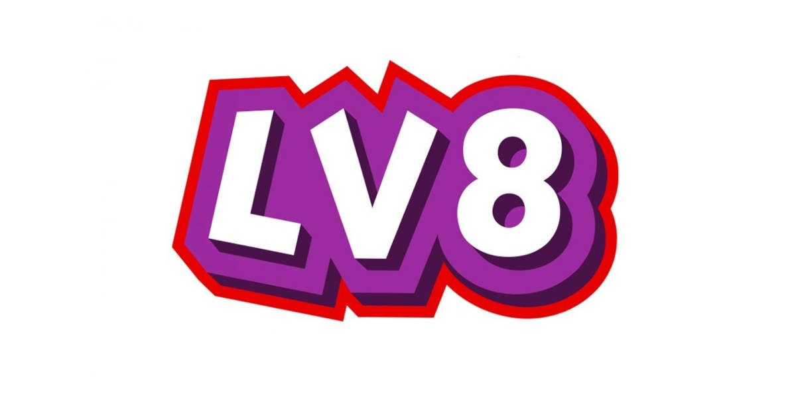

Project Work · 3ª Superiore
Sicurezza informatica con LV8
Una sfida tra compagni, un’esperienza di crescita e tanta sicurezza informatica: il progetto che ha unito gioco, studio e competizione.
Un progetto coinvolgente
Durante il terzo anno ho partecipato a un Project Work in collaborazione con la piattaforma LV8, un’app pensata per insegnare la sicurezza informatica in modo interattivo e stimolante.
Attraverso l’app ci siamo sfidati tra compagni di classe completando missioni, quiz e simulazioni reali. Oltre al divertimento, abbiamo imparato nozioni fondamentali su come navigare in sicurezza online, riconoscere gli attacchi di phishing e proteggere i nostri dati.
È stata un’esperienza che ha unito gioco, studio e competizione, aiutandoci a sviluppare anche il lavoro di squadra e il pensiero critico.

Obiettivi del progetto
Imparare la sicurezza
Acquisire le basi della cybersecurity: navigare sicuri, riconoscere le minacce e difendere i dati personali.
Collaborare
Affrontare le missioni come gruppo, confrontandosi e dividendosi i compiti per arrivare al risultato.
Pensiero critico
Valutare le situazioni, riconoscere i tentativi di inganno e scegliere il comportamento più sicuro.
Il percorso di sviluppo
L’app guidava l’apprendimento per tappe, alternando teoria e prove pratiche.
Missioni guidate
Percorsi tematici che introducevano i concetti di sicurezza uno alla volta.
Quiz e verifiche
Domande per consolidare le nozioni apprese e misurare i progressi.
Simulazioni reali
Scenari concreti, come email sospette, da analizzare e gestire in sicurezza.
Sfida tra compagni
La componente competitiva che ha reso il percorso coinvolgente e stimolante.
Cosa ho imparato
- Riconoscere gli attacchi di phishing e le email ingannevoli
- Proteggere i dati personali e usare credenziali sicure
- Navigare online in modo consapevole e sicuro
- Capire i comportamenti a rischio e come evitarli
Competenze sviluppate
Risultati e riflessione
Il progetto ha trasformato un argomento spesso percepito come tecnico e distante in qualcosa di vicino e quotidiano. Ho capito quanto la sicurezza informatica riguardi ognuno di noi, ogni volta che usiamo uno smartphone o accediamo a un account.
Sul piano personale, la dimensione di squadra e la competizione mi hanno spinto a dare il meglio, rafforzando la mia passione per l’informatica.
La mia esperienzaAll’inizio pensavo fosse una cosa banale, ma si è rivelato molto più interessante, stimolante e costruttivo di quanto credessi.